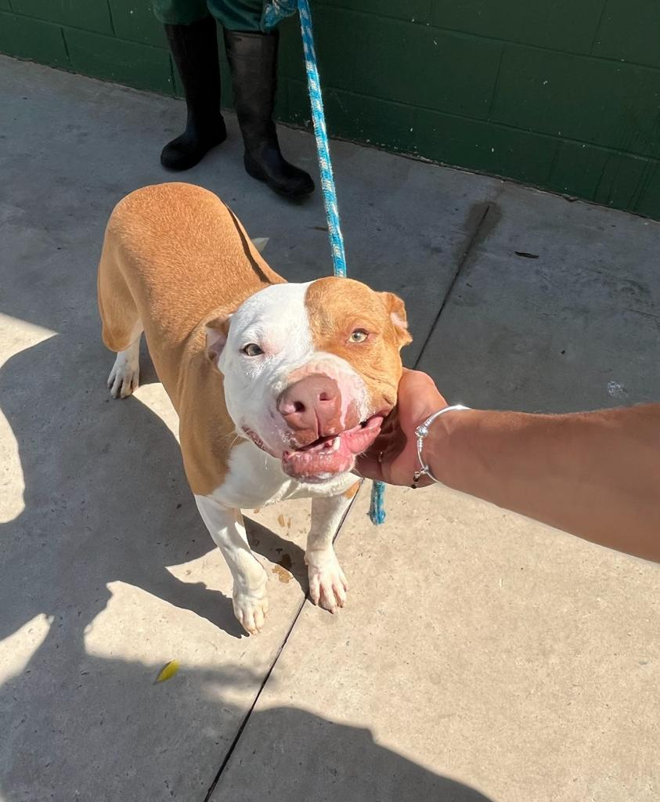

🐾 Adote um Cãozinho 🐾
Conheça os cães incríveis disponíveis para adoção. Cada um tem uma história única e está esperando por um lar amoroso. Faça parte dessa jornada de amor e alegria. Encontre o companheiro perfeito e compartilhe momentos especiais juntos.
